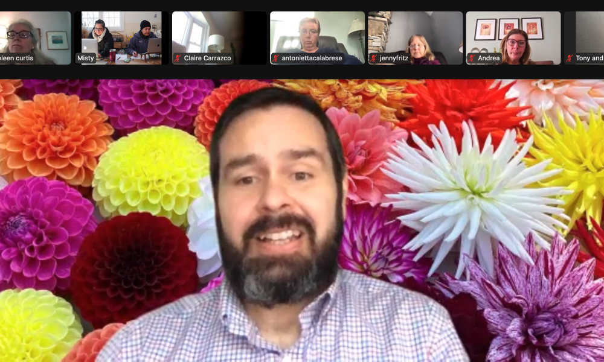
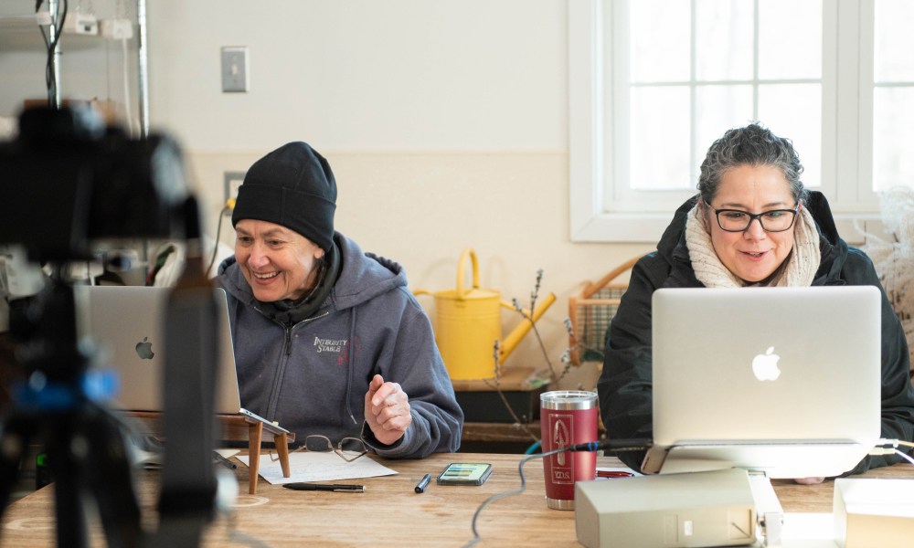
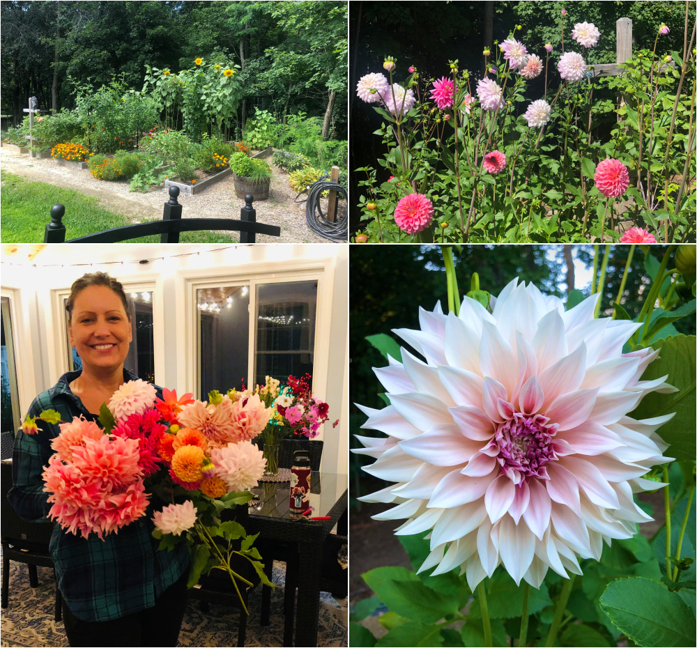
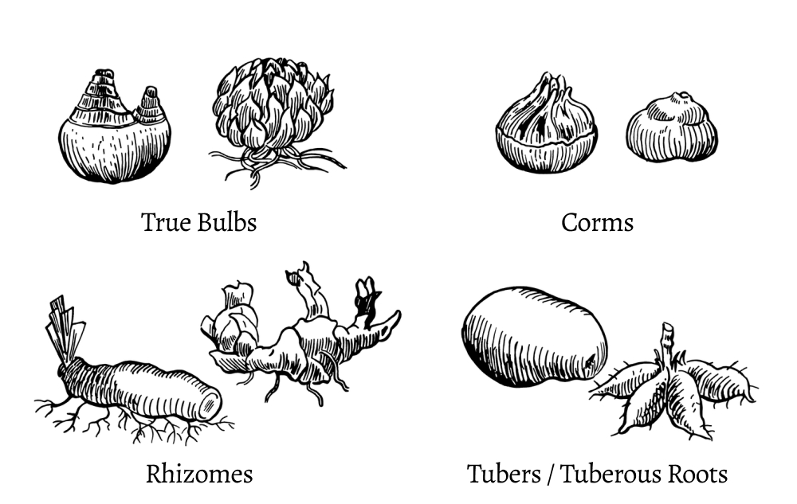
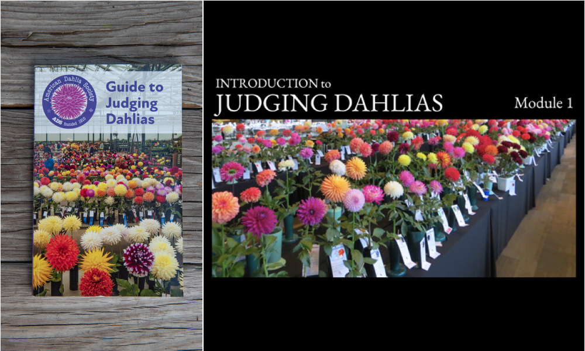
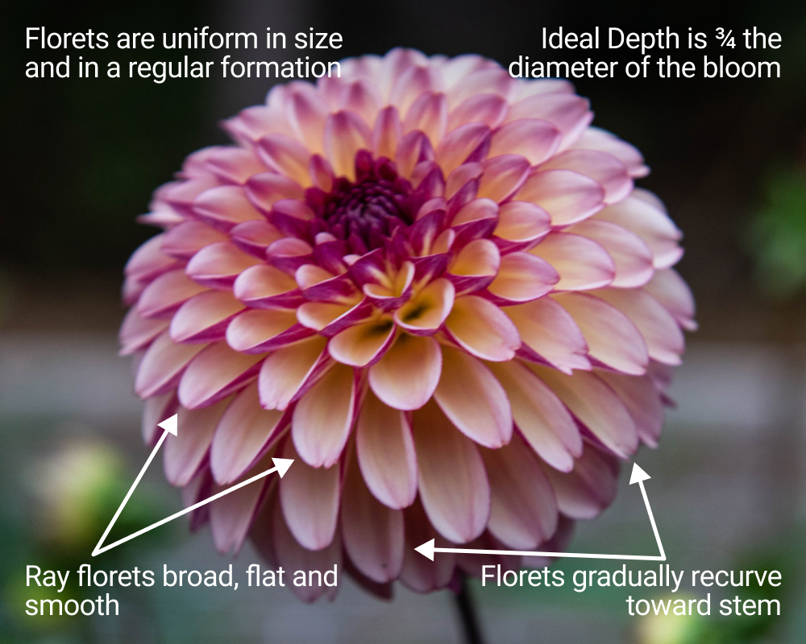

|
Hello dahlia friends!
February went by really fast and we have been
indoors working on a variety of activities. We
are very grateful for the handful of volunteers
last month that were able to come out and join
us around the studio; labeling tubers,
organizing, getting orders pulled, checking
orders and cutting chicken wire. Overall
February proved to be a very mild winter season,
but in New England fashion, goes out with a
blast of very cold weather and a little snow.
Wondering why YDS is cutting chicken wire? We
are getting ready for our YDS Bloom Exhibit as
our fall dahlia display will be floral foam
free. Join us at 10:00am on Sunday, March 5th
and be part of the YDS Bloom Team to participate
and be behind the scenes for our 2nd Annual
Bloom Exhibit that will happen this fall at
Spence Farm.
In February we started the month with a
fantastic Zoom meeting with dahlia grower and
special guest Trevor Hoff. His slide
presentation was a wonderful overview on
breeding dahlias and tips on how to plan your
dahlia garden before our 2023 dahlia season
begins. We are so very grateful to Trevor for
taking time to share his knowledge with us. If
you weren’t able to attend the live Zoom meeting
email us so you can watch the recording. Trevor
organized his breeding images and generously
shared his drive of photos
for us to explore. Be sure to take time and
check it out. It’s a wonderful resource to view
his seed parents and photos comparing seedlings.
We trust many of you were inspired as we were
and can’t wait to see lots of you collecting
seeds this year.


Be sure to join us for our next meeting in
person this Sunday, March 5th at Spence Farm as
it will be a good day to get out and join us.
Those of you that have signed up to pick up your
tuber order at the meeting we will be sure to
have it ready. For those who haven’t picked up
their dahlia tuber order please make sure to
take a moment to sign up to let us know if you
would like us to ship* your order mid April
(*shipping rates to be billed separately) or
plan to join us at our March 5th or May 7th
meeting and would like to pick up your order.
See you soon & hope to see you there!
– Misty & Carol
|
|
March 5th Meeting
Spring is Almost Here & Dahlia Season Begins
Join Y.D.S. Co-Presidents Carol Palmer and Misty
Florez as we chat about the spring and dahlias.
We are counting down the days to spring and are
very excited for the gardening season to begin.
Join us for a fun meeting as we take a closer
look at some of the things we can do in March to
prepare for our dahlia gardens. Whether you’re
trying cuttings for the first time, want to try
your hand at dahlia seeds, considering setting
up a grow light rack to start your tubers
indoors, worried about shriveled dahlia tubers,
still needing to divide, or need help with
dividing the more challenging clumps, we’ll have
a variety of stations set up to help you get
some practice.
We are bringing our lights and growing rack set
up to demonstrate how you can easily start
seeds, propagate cuttings and get a jump start
to growing your dahlia plants at home. Feel free
to bring in your own challenging clumps,
cuttings and seed starting trays, tubers you are
worried about, and tools to practice your skills
and share with everyone.
Location:
Spence Farm @ Hurld Wyman Elementary School, 41
Wyman Street, Woburn, MA 01801
Date & Time:
Sunday, March 5, 2023 from 10:00am to 2:00pm
|
|
Member Spotlight
Lori Nelson

Photo 1-4 by Lori Nelson
 nassfarmflowers
nassfarmflowers
I have long kept a very small vegetable garden
for salads and salsa and have also derived great
pleasure landscaping and keeping perennials
throughout my yard, however I am new on the
scene of annual flower growing. My passion for
annuals came to me quite unexpectedly and grew
quickly over the past 3 years.
In 2020, we brought in 150 tons of fill to level
our backyard to build a raised bed garden. This
was our family passion project throughout Covid
quarantine. We bought a used tractor and this
became the year that my family now lovingly
refers to as “that time we became farmers”. At
that time we built just 4 raised beds for the
sole purpose of growing vegetables and berries.
I planted only three dahlias this first year and
no other annual flowers. In 2021, in addition to
2 new raised beds, I built 5 "no dig" beds in a
new garden on the left side of my house all
dedicated to annual flowers; sunflowers,
zinnias, cosmos, snapdragons, and celosia, to
name a few.
I now have nine 4x16 beds for flowers and veg.
Each year I allot less room for veg in lieu of
more room for dahlias and annuals. I also have
two 2x16 beds for raspberries and blueberries
and perennial gardens throughout our property
which is a little under one acre in size. My
desire to grow dahlias and other annual flowers
has now taken priority over growing all veg with
the exception of tomatoes and herbs. It feels so
basic to say it but since my love of dahlias
began with the beautiful Cafe au Lait dahlia it
will most likely always be on my list of
favorites. Though I love growing vegetables such
as peppers, squashes and pumpkins I would simply
rather commit the space to growing more
beautiful flowers. I also enjoy growing and
propagating succulents indoors.
“To plant a garden is to believe in tomorrow”-
Audrey Hepburn’s quote on gardening is truly
what it means to me. The year 2018 was a most
challenging year. I lost my mother to cancer and
six months later was myself diagnosed with the
same disease that took her away from me. In the
year that followed I was not only consumed by
grief but also numerous rounds of chemotherapy,
radiation, surgery. Today I am healthy but I
truly believe that gardening has been the most
effective form of physical and mental therapy
for me in the wake of these adversities. From
the physical nature of digging and moving earth
to the quiet meditative time spent planting
seeds, nurturing seedlings, weeding and
deadheading; from the thoughtful planning for a
new growing season to the lessons learned from
the previous growing season...these are what I
love most about gardening. The garden has given
me purpose, much-needed structure and an
anticipative start to each new day.
I have lived in my current home for 8 years and
it was a new build when we moved in. I have
enjoyed the process of starting with a blank
slate to create perennial beds and gardens
throughout our property. Learning about what
works well in my climate, with my soil but also
what is visually pleasing has been fun. Some of
my favorites to grow are hydrangeas, irises,
salvias, and lilies. I try to add to these
collections every year to increase color, form
and variety. I adore growing daffodils and
tulips almost as much as I love growing dahlias.
This fall I planted 1000 tulip bulbs.
I love learning about growing dahlias, tuber
storage and propagating. I very much enjoyed
learning from YDS how to take cuttings and
propagate and found success doing this with my
own collection last year. There is still so much
to learn about dahlias but I have benefited
immensely from time spent with YDS and its
members. Attending the YDS event at the public
library was very good for me as I could see for
myself how my blooms hold up next to others. I
loved this event!
While the anticipation of that first bloom from
a new tuber is a very exciting part of growing
dahlias I also look forward to the process of
expressing myself creatively through flower
arranging and finding new ways of displaying
them in my home for seasonal decor. It also
brings me great joy to share my blooms with
others.
It has been my goal each year to use my time in
the winter to spend time learning about flower
farming on a small scale, flower arranging and
flower photography. I am a 2021 Floret alum and
eager to take what I have learned through Erin’s
course, YDS and my own endeavors over the past
few years to the next level and try to monetize
my passion. I have thoroughly enjoyed sharing my
flowers with friends and neighbors and am now
looking forward to selling my own homegrown
bouquets in my area in the coming year.
Lastly, I thought I would share another little
side interest of mine…vermicomposting! I have
been doing this for almost a year now since
becoming aware of the vast benefits of worm
compost. I have my own little worm farm filled
with 1000 red wiggler worms who are constantly
working hard to create the most nutrient-rich
castings for me to work into my garden soil. It
is an excellent organic soil additive in
addition to a fantastic way to dispose of your
vegetable scraps!
|
|
Dahlia Tip
True Bulbs and Root Tubers
By Carol Palmer & Misty Florez

Photo sourced from
University of Georgia
Have you ever heard a dahlia tuber referred to
as a bulb? In a broad sense this isn’t wrong,
but it isn’t right either. You can spot a new
grower when they speak about dividing or storing
their dahlia bulbs. “Bulb” is often mistakenly
used as a generalized term to refer to the four
different types of fleshy underground storage
structures that can be present in the group of
plants known as geophytes, which includes
dahlias.
What is a geophyte? It’s a plant that stores
food and water in any of several kinds of
specialized underground structures called
perennating organs. Perennating organs allow the
geophyte to survive through periods of dormancy
or unfavorable growing conditions and to grow
and reproduce year after year. The most common
kinds of perennating organs along with examples
are:
- True bulbs (tulips, onions)
- Corms (crocus, gladiola, freesia)
-
Rhizomes (cannas, lily of the valley, ginger)
-
Tubers:
- Stem tubers (potatoes)
-
Root tubers or tuberous roots (dahlias,
sweet potatoes)
Off the top of your head name three types of
bulb plants. Did you say, tulips, onions and
daffodils? These common bulb plants represent
the category known as true bulbs. All the parts
of the mature plant are contained within a true
bulb in embryonic form, and the entire plant
grows from within the true bulb.
A true bulb consists of:
-
A basal plate which is the bottom of the bulb
where the roots grow and where the lateral
buds or new offsets are produced
-
Fleshy scales which are the main food storage
organs of the bulb that surround the shoot
-
The shoot which is the developing flower bud
and the new leaf buds
-
Some true bulbs (think tulips) have a
protective papery outer sheath called a tunic
and are known as tunicate bulbs
-
Imbricate bulbs such as lilies lack a
protective outer sheath
Tuberous roots as are found in dahlias are
enlarged root structures that form around the
central stem of the plant during the growing
season. These specialized root structures don’t
contain an entire new plant within them as is
the case with true bulbs. The tuberous root
simply stores food and water and can produce new
roots but by itself can’t produce buds or a new
plant.
The rough thickened portion of the tuberous root
where it is attached to the central stem is
called the crown. The crown area of the tuberous
root is actually part of the stem of the dahlia
plant where new buds or eyes were forming during
the growing season, and where new leaves and
stems will grow to produce a new dahlia plant.
This is why it’s necessary to always save a part
of the crown with at least one eye in order for
a new dahlia plant to grow.
So what’s in a name? In the case of the dahlia,
it does matter. Although the dahlia is one of
the group of plants known as geophytes it is not
a bulb, but rather a root tuber, referred to
more simply as a tuber.
|
|
Assist with the 2nd Annual YDS Dahlia Bloom
Exhibit

Photo by Misty Florez
YDS 2nd Annual Dahlia Bloom Exhibit:
Saturday, September 30 & Sunday, October 1,
2023 at Spence Farm in Woburn, MA
Assistance & Planning Team:
We will be in need of club members to volunteer
to help with the planning and execution of the
weekend's events (Sept. 30th & Oct. 1st). There
are a variety of tasks to be accomplished
between now and then to make our annual YDS
Dahlia Exhibit a success. If you have time to
help and can sign up that would be greatly
appreciated. Many hands will make it fun and
light work. The planning team will meet over the
next few months. Thank you so much for stepping
up to help! We can't do it without you.
Upcoming Planning meetings:
March 5th & May 7th Planning meetings will be
held at 10:15 am, 45 minutes before the club
meeting begins.
SignUp today & be part of the Dahlia Bloom
Exhibit Team
|
|
Garden Aprons
Back in Stock & New Patterns Available

We are getting ready for spring and looking
forward to being outside and in the garden in
just a few short weeks. We have garden aprons
back in stock with 7 new patterns available.
Kids aprons in 4 adorable matching patterns are
also available. Quantities are limited so don’t
delay. Visit our website to order yours and pick
up at our March 5th meeting or have it shipped
with your tuber order in the spring.
Shop Supplies on the YDS Shop
|
|
American Dahlia Society

Booklet Photo by Misty Florez
2023 Classification and Handbook of Dahlias
A new year means there is a new issue of the
Classification and Handbook of Dahlias published
by the American Dahlia Society. The annual CHD
is a pocket size list of dahlia cultivars that
have won at least two blue ribbons at
ADS-affiliated dahlia shows or have scored at
least 85.0 from an official trial garden or
seedling bench evaluation in the past year.
Cultivars are listed alphabetically and also by
class.
New ADS Judging Guide and Training Modules
In 2020 the American Dahlia Society began work
on revising the Guide to Judging Dahlias. After
two years and many hours of volunteer effort
from the revision committee a new updated Guide
to Judging Dahlias was produced with color
images, making it a wonderful resource for
growers and judges alike.
In a continued effort to create new tools to
help dahlia growers a new committee was formed
to produce an Online Judge’s Curriculum. The
Curriculum is a comprehensive set of Judging
Training Modules available to ADS members on
their website. Dahlia growers who are wanting to
expand their knowledge about dahlias as well as
those who are interested in learning to become
an ADS judge will find these modules helpful.
Check them out in the Members Only section of
the ADS website:
https://www.dahlia.org/
Clean Stock Initiative - Virus Research Team
Yankee Dahlia Society since our inception has
chosen to participate in the ADS annual Clean
Stock Initiative program. New developments in
dahlia virus research were shared last year with
Ron Miner from the Dahlia Society of Ohio and
the ADS Virus Team Chair.
In October of 2022, we learned that “WSU
(Washington State University) had discovered the
reason that DMV (Dahlia Mosaic Virus) had not
been detected in recent years: it had evolved.
The WSU group had developed genome information
on the modified DMV and could now reliably test
for it. The practical consequence was that the
2022 samples all needed retesting for DMV/DCMV.”
Ron Miner and Dr. Hanu Pappu will be holding a
Zoom meeting on Saturday, March 4 at 1:00 pm EST
to share more about these findings. Any YDS
members that are also ADS members who would like
to join the Zoom meeting please reach out via
email and we will include you on the Zoom link
that has been shared.
Email:
info@yankeedahliasociety.com
Subject:
ADS Clean Stock Initiative Zoom on March 4th
Yankee Dahlia Society, Inc. participates
annually in the American Dahlia Society Clean
Stock Initiative Program: 2021, 2022
Interested in Joining the American Dahlia
Society:
Join the American Dahlia Society or renew your
annual membership through YDS.
-
USA Individual Membership (1-person,
1-Classification book)
$30
-
USA Household Membership (2-people,
2-Classification books)
$35
Email:
info@yankeedahliasociety.com
Subject:
ADS Registration
|
|
Bulk Soil Purchase –
Last Chance

Photo by Misty Florez
Last chance for ProMix potting soil. We have one
bale and two bags of ProMix BX with Mycorrhizae
and Biofungicide available for pick up at our
March meeting in time for you to start your
tubers or seeds indoors. Great for starting your
dahlia tubers and for general all purpose
potting mix. First come first served, be sure to
email us and reserve them and we’ll have it
ready for you to pick up at the March 5th
meeting.
Email:
info@yankeedahliasociety.com
Subject:
I’d like to pick up ProMix on March 5th
-
ProMix BX with Mycorrhizae and Biofungicide
(60lb compressed bale)
$65.00/bale
-
ProMix BX with Mycorrhizae and Biofungicide
(25lb bag)
$35.00/bag
|
|
SignUp Genius - Monthly Volunteer Link
2023 Volunteer Activities - SignUp Genius
As things are a bit slower this time of year, do
you have some extra time to help out the club?
Come and join us as there is something we are
always working on. Spring is around the corner
and we need to get the remaining tubers labeled
and start organizing and making plans for our
2023 YDS Growing Partners and the tubers we will
grow out for club stock.
Check out the SignUp Genius for dates, times and
to join us! We greatly appreciate all the member
volunteer time and it’s always a lot of fun to
get together. Don’t see a day/time on the
calendar but you have time to help? Please reach
out (text or email) and let us know your
availability and if there is something you would
like to help with otherwise we will surely have
a job for you. Thank you!
|
|
Thank You to Our February Volunteers
Our February volunteers collectively gave over
51 hours of time to the club. Simply amazing!!!!
We appreciate all the help we had this month!
Thank you
.
- Jackie Burchard
- Andrea Campbell
- Melinda Ching
- Jocelyn Cook
- Rich D’Orsi
- Peter Heller
- Carol Manning
- Lori Nelson
- Julia Oswald
- Betsy Szymczak
|
|
Pick Up or Ship Your Tuber Order

Terri Reese picking up her tubers and growing
supplies
Photo by Misty Florez
Be sure to sign up and let us know if you plan
on picking up your tuber order at one of the
upcoming club meetings on March 5th or May 7th
at Spence Farm. Alternatively you can sign up to
have us ship* your order in the early spring as
weather allows. (*Shipping rates will be
calculated and billed separately)
Custom pickups can be arranged by emailing Misty
or Carol at info@yankeedahliasociety.com
Sign up to pick up or ship your tuber order
|
|
Dahlia Forms
Formal Decorative
Cultivar: Foxy Lady

Photography by: Misty Florez
|
|
|
Upcoming Meetings & Events
See All Meetings
Sunday, March 5th:
Hands On Seasonal Demonstration and Workshop @
Spence Farm, Woburn MA
Saturday, April 2nd:
Zoom meeting: Zoom Meeting with Guest
Presenter
|
|
|
|
|